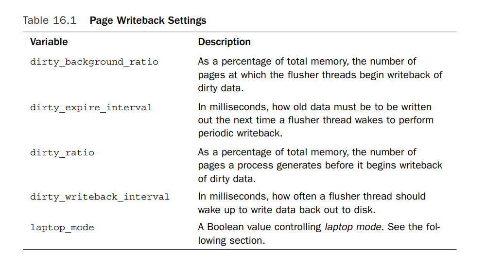

如果每次读写文件数据都需要访问磁盘，磁盘访问比内存访问要慢的多，是毫秒级与纳秒级的区别，加之数据访问的聚簇性原理，对文件的内存cache可以优化文件I/O
file i/o unit
磁盘的访问单元是sector. 通常，一个sector为512bytes. 其他的块设备，也有自己的最小访问单元，比如光盘的最小访问单元是2k bytes。
文件系统可运行在不同的物理块设备上，因此文件系统有自己的可寻址单元，块。块通常是扇区的整数倍。通常的块大小有512byte, 1k，4k等。 块大小也不能大于page size。 一个块由多个连续的sector组成。
file i/o以块为单位。如果一个块小于内存的page大小，则一个page可以对应磁盘的多个块
文件的磁盘存储
在Linux上，ext3文件系统，以及其后续版本ext4，通常不会保证一个文件的数据连续存储在磁盘上。这些文件系统使用一种称为“块映射”的技术来管理文件数据。
在这种技术下，每个文件由一个inode（i-node）表示，inode记录了文件的元数据，包括文件的大小、创建时间、最后修改时间等信息。对于文件数据，inode维护一个指向数据块的指针列表。这些数据块可以分布在磁盘上的任何位置，而不是连续的。
每个数据块通常有一个固定的大小，例如4KB。当文件系统需要存储一个文件时，它会寻找空闲的块，并将这些块分配给文件。这些块可能分散在磁盘上，文件系统通过inode中的块映射来跟踪它们。
page cache
文件的内存cache使用的是page cache。 page cache使用内存的物理页来cache 文件数据。page cache消耗的内存大小是动态变化的，可以在file i/o intense时消耗大量的内存页，也可以在内存紧张时释放这些页面。当内核要从其中读取数据时，比如进程调用read系统调用时，内核首先检查需要的数据是否在page cache中。如果在的话，直接从中读取数据。这叫做cache hit.如果不在，叫做cache miss，这时候只能从磁盘中读取数据了。当数据读到内存中后会缓存在page cache中以供下次读取。 当需要向磁盘中写数据时，比如write系统调用，可以有3中写策略。第一种叫做nowrite,只写磁盘，如果内存中有该块数据，则invalidate the cached data,下次读取时需要先从磁盘读取。第二种叫做write-through,即写内存也写磁盘。第三种策略，也是linux使用的策略，叫做write-back,只写内存中缓存的页面，不立即写磁盘，同时将内存中的页面标记为dirty，添加到dirty list. dirty list中的dirty page每隔一段时间就会被写回磁盘，这由writeback这个过程负责，写回磁盘的页不再被标记为dirty，并且与磁盘的数据保持一致了。write back明显要优于write through. write through需要立即写磁盘，耗时更长。而write-back将磁盘写延后，可以对写数据进行整合，优化磁盘i/o。同时，如果我们要写的数据不在page cache中，会生成page cache,并将其标记为dirty，之后writeback过程再将其写入磁盘。 当内存不足时，需要释放部分page cache.首先是释放clean page,如果没有clean page,则需要执行writeback，将部分dirty page同步到磁盘后变成clean page。关键是决定释放哪些页，我们希望释放的页将来不会被使用，但是我们并不能知道将来会使用哪些页，我们可以使用以下两种方法
- Least Recently Used LRU算法需要追踪每个页面被accessed时间，最起码将页面按照访问时间排序，释放的页面一定是最久之前访问的，这样的页面我们预估其将来被访问的可能性最小。 然而该算法的一个缺陷是，有可能很多文件被一次性访问了之后就再也不会访问它。这会使得这些页面在lru链表的头部，然而这并不合适，因为他们不会再被访问，后续释放页面时也应该释放掉这些页面才对，反而释放的尾部的页面很可能是我们之后需要访问的。当然，我们是无法知道一个页面是否只会被访问一次，但我们可以记录一个页面被访问了多少次。下个算法就是针对这个问题的优化
- The Two-List Strategy Linux实现该方法。相比于lru只维持一个链表，该方法维持两个链表，active list和inactive list. active list中的页面是hot,频繁的在被访问，不能被释放。只有inactive list中的页面才可以被释放。 页面在第一次被访问后首先是放到inactive list中的，只有inactive list中的页面再次被访问，才能放到active list中。同时，这两个链表每个都是以访问时间排序，从尾部添加，从头部删除。当active list中的页面过多时，其中的部分页面会被调整到inactive list中可供释放。 这个two-list 策略又叫做 LRU/2.同时，也可以使用n-lists,LRU/n。
我们看一个page cache的实际例子 比如我们正在working on a large software project,比如linux kernel.我们打开了很多source file,这些source file都被缓存在page cache中,我们从一个文件切换到另一个文件很快，因为只需要读内存就可以了，同时写文件也很快，因为也只写内存。当我们编辑完文件开始编译时，编译也是会很快的因为大部分也都缓存在内存中。相比之下，如果我们刚启动计算机，然后就立即编译我们的project，就要慢的多了,因为都要先从磁盘读取
Linux Page Cache的实现
linux page cache 缓存的是文件数据，在文件i/o时会使用。这包括普通的磁盘文件i/o或者内存映射的磁盘文件i/o。 每个文件的内存page cache用一个address_space object描述。
The address_space Object
struct address_space { struct inode *host; /* owner: inode, block_device */ struct radix_tree_root page_tree; /* radix tree of all pages */ rwlock_t tree_lock; /* and rwlock protecting it */ unsigned int i_mmap_writable;/* count VM_SHARED mappings */ struct prio_tree_root i_mmap; /* tree of private and shared mappings */ /*vm_area_struct结构体中shared字段会连接成prio_tree*/ struct list_head i_mmap_nonlinear;/*list VM_NONLINEAR mappings */ /*同上*/ spinlock_t i_mmap_lock; /* protect tree, count, list */ unsigned int truncate_count; /* Cover race condition with truncate */ unsigned long nrpages; /* number of total pages */ pgoff_t writeback_index;/* writeback starts here */ /*pgoff_t 类型是unsigned long*/ const struct address_space_operations *a_ops; /* methods */ unsigned long flags; /* error bits/gfp mask */ struct backing_dev_info *backing_dev_info; /* device readahead, etc */ spinlock_t private_lock; /* for use by the address_space */ struct list_head private_list; /* ditto */ struct address_space *assoc_mapping; /* ditto */ } __attribute__((aligned(sizeof(long))));这其中的i_mmap字段是该文件被mmap的优先搜索树。一个文件最多只会有一个address_space结构体，表示该文件内容在内存中缓存的page，而可能被多个进程映射，故该address_space会关联多个vm_area_struct结构体。这个搜索树就是由所有相关vm_area_struct结构体中的shared字段所连接的。 a_ops字段表示该address space的操作函数列表。
struct address_space_operations { int (*writepage)(struct page *page, struct writeback_control *wbc); int (*readpage)(struct file *, struct page *); void (*sync_page)(struct page *); /* Write back some dirty pages from this mapping. */ int (*writepages)(struct address_space *, struct writeback_control *); /* Set a page dirty. Return true if this dirtied it */ int (*set_page_dirty)(struct page *page); int (*readpages)(struct file *filp, struct address_space *mapping, struct list_head *pages, unsigned nr_pages); /* * ext3 requires that a successful prepare_write() call be followed * by a commit_write() call - they must be balanced */ int (*prepare_write)(struct file *, struct page *, unsigned, unsigned); int (*commit_write)(struct file *, struct page *, unsigned, unsigned); /* Unfortunately this kludge is needed for FIBMAP. Don't use it */ sector_t (*bmap)(struct address_space *, sector_t); void (*invalidatepage) (struct page *, unsigned long); int (*releasepage) (struct page *, gfp_t); ssize_t (*direct_IO)(int, struct kiocb *, const struct iovec *iov, loff_t offset, unsigned long nr_segs); struct page* (*get_xip_page)(struct address_space *, sector_t, int); /* migrate the contents of a page to the specified target */ int (*migratepage) (struct address_space *, struct page *, struct page *); int (*launder_page) (struct page *); };该操作列表由各个文件系统提供。
File I/O
当linux需要从文件中读取数据时，首先检查该数据是否在cache中，linux调用find_get_page函数
/**
* find_get_page - find and get a page reference
* @mapping: the address_space to search
* @offset: the page index
*
* Is there a pagecache struct page at the given (mapping, offset) tuple?
* If yes, increment its refcount and return it; if no, return NULL.
*/
struct page * find_get_page(struct address_space *mapping, unsigned long offset)
{
struct page *page;
read_lock_irq(&mapping->tree_lock);
page = radix_tree_lookup(&mapping->page_tree, offset);
if (page)
page_cache_get(page);
read_unlock_irq(&mapping->tree_lock);
return page;
}
如果不存在，需要分配新的page,并将其添加到page cache中，过程大概如下
struct page *page;
int error;
/* allocate the page ... */
page = page_cache_alloc_cold(mapping); //分配新的page,这里就是调用alloc_pages函数
if (!page)
/* error allocating memory */
/* ... and then add it to the page cache */
error = add_to_page_cache_lru(page, mapping, index, GFP_KERNEL); //将page添加到page cache中
if (error)
/* error adding page to page cache */
其中add_to_page_cache_lru如下,不仅将其添加到page cache中，还会添加到inactive list中
int add_to_page_cache_lru(struct page *page, struct address_space *mapping,
pgoff_t offset, gfp_t gfp_mask)
{
int ret = add_to_page_cache(page, mapping, offset, gfp_mask);
if (ret == 0)
lru_cache_add(page);
return ret;
}
/**
* add_to_page_cache - add newly allocated pagecache pages
* @page: page to add
* @mapping: the page's address_space
* @offset: page index
* @gfp_mask: page allocation mode
*
* This function is used to add newly allocated pagecache pages;
* the page is new, so we can just run SetPageLocked() against it.
* The other page state flags were set by rmqueue().
*
* This function does not add the page to the LRU. The caller must do that.
*/
int add_to_page_cache(struct page *page, struct address_space *mapping,
pgoff_t offset, gfp_t gfp_mask)
{
int error = radix_tree_preload(gfp_mask & ~__GFP_HIGHMEM);
if (error == 0) {
write_lock_irq(&mapping->tree_lock);
error = radix_tree_insert(&mapping->page_tree, offset, page);
if (!error) {
page_cache_get(page);
SetPageLocked(page);
page->mapping = mapping;
page->index = offset;
mapping->nrpages++;
__inc_zone_page_state(page, NR_FILE_PAGES);
}
write_unlock_irq(&mapping->tree_lock);
radix_tree_preload_end();
}
return error;
}
最后，所需的数据可从磁盘中读取，并读到该page中
mapping->a_ops->readpage(file, page);
写操作主要区分为两种generic_file_buffered_write和generic_file_direct_write,都定义在filemap.c文件中。
后者是用于文件设置了o_direct标志的写操作，该操作会bypass page cache 直接往磁盘写。前者是使用page cache的写操作。
从address_space中查找page是否被cache，提供的参数通常是file offset。这个数据结构是radix tree,代码在lib/radix-tree.c文件中。
The Flusher Threads
Dirty page writeback occurs in three situations:
- 当free memory 低于阈值的时候，内核会将dirty page writeback to disk.这样这些dirty page会变成clean,从而可以释放掉。
- 当dirty page 中的数据很老了，老于阈值。这样不至于dirty page remain dirty forever
- 当user process 调用sync,或者fsync 系统调用
2.6版本的内核使用一组并发运行的flusher threads来执行这3种操作。线程数量取决于块设备数量 当系统free memory 低于dirty_background_ratio这个全局变量时，内核会调用wakeup_flusher_threads()函数. 该函数会唤醒一个或多个flusher threads,这些线程会运行bdi_writeback_all函数，该函数的参数是需要写回的dirty page数量，这个函数会一直writeback dirty page直到以下两个条件满足
- The specified minimum number of pages has been written out.
- The amount of free memory is above the dirty_background_ratio threshold.
对于第二个场景的实现，a flusher thread 会每隔一段时间就被唤醒，将old dirty page writeback to disk.在系统启动时，会初始化一个dymanic timer,该timer会定时唤醒 flusher thread, flusher thread唤醒后会运行wb_writeback()函数，该函数会将所有数据老于dirty_expire_interval milliseconds ago的dirty page写回。timer 每隔dirty_writeback_interval milliseconds就会触发一次。 以上的这些全局变量，dirty_background_ratio，dirty_expire_interval，dirty_writeback_interval都可以通过sysctl命令或者通过/proc/sys/vm来设置。

每个flusher线程与一个块设备相关联。Laptop mode 这是个特殊的wirteback 策略。可通过/proc/sys/vm/laptop_mode来设置。默认是0，laptop mode is disabled
Laptop mode makes a single change to page writeback behavior. In addition to performing writeback of dirty pages when they grow too old, the flusher threads also piggyback off any other physical disk I/O, flushing all dirty buffers to disk. In this manner, page writeback takes advantage that the disk was just spun up, ensuring that it will not cause the disk to spin up later. 开启这种模式时，dirty_writeback_interval 和 dirty_expire_interval最好设置的大一些，比如10 分钟。这样磁盘会隔很久才会运行，每次尽可能多的flush old data，这样更省电。缺点就是一旦系统发生故障停机后，没来得及flush的数据就会丢失了
很多linux发行版会自动在断掉电源时开启laptop模式（省电），而接入电源时关闭laptop模式